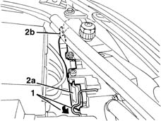
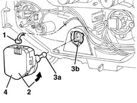
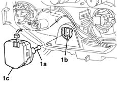

5540C24 motor (one) for l/h or r/h headlamp/light cluster alignment correction - r+r
- Path
- Procedures > 55 ELECTRICAL EQUIPMENT > 5540 EXTERIOR LIGHTING > 5540C headlamp/light cluster alignment correction devices > 5540C24 motor (one) for l/h or r/h headlamp/light cluster alignment correction - r+r
- Kind
- repair procedure (removal / refitting; the operation number is the code)
- Applies to
- all engines; all production periods
- Interactive page
- https://sloeber94.github.io/elrnDB-lYpsln/en/#/2429416
Applies to: all engines; all production periods
 Removing
Removing
 Refitting
RefittingOpen the bonnet lid.
1. Turn the cover retainer.
2. Remove cover (2a), releasing the retainers (2b).

Applies to: all engines; all production periods
1. Disconnect the electrical connection.
2. Rotate and withdraw the motor slightly (bayonet mount).
3. Release motor ball (3a) from seat (3b).
4. Recover the motor.

Applies to: all engines; all production periods
Refitting
RemovingCheck that the motor is undamaged.
Connect the electrical connection and position the motor.
1. Check that ball (1a) engages correctly in seat (1b) when motor (1c) is fitted (bayonet mount).

Applies to: all engines; all production periods
Refit the cover correctly, exerting pressure to the centre of it, until a click is heard. Check that it is secure.
Reposition the cover retainer.
Check the operation of the headlamp alignment by operating the special switch from the passenger compartment with the dipped headlamps on.
If necessary, 5540B38 headlamp/light cluster light beam - position